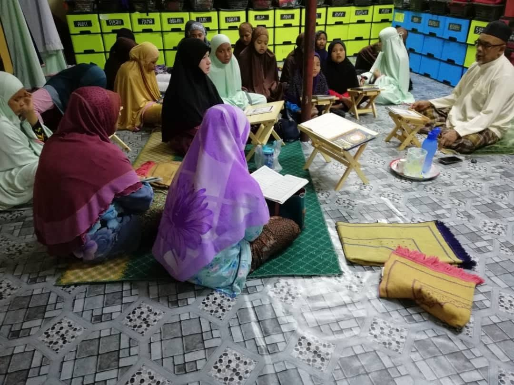
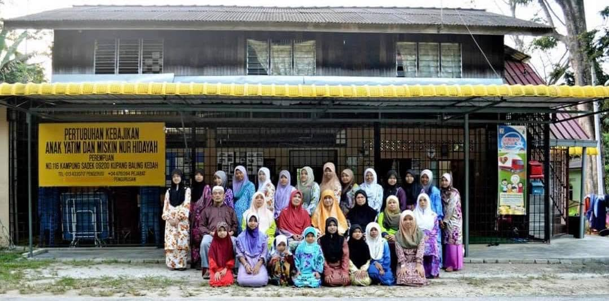
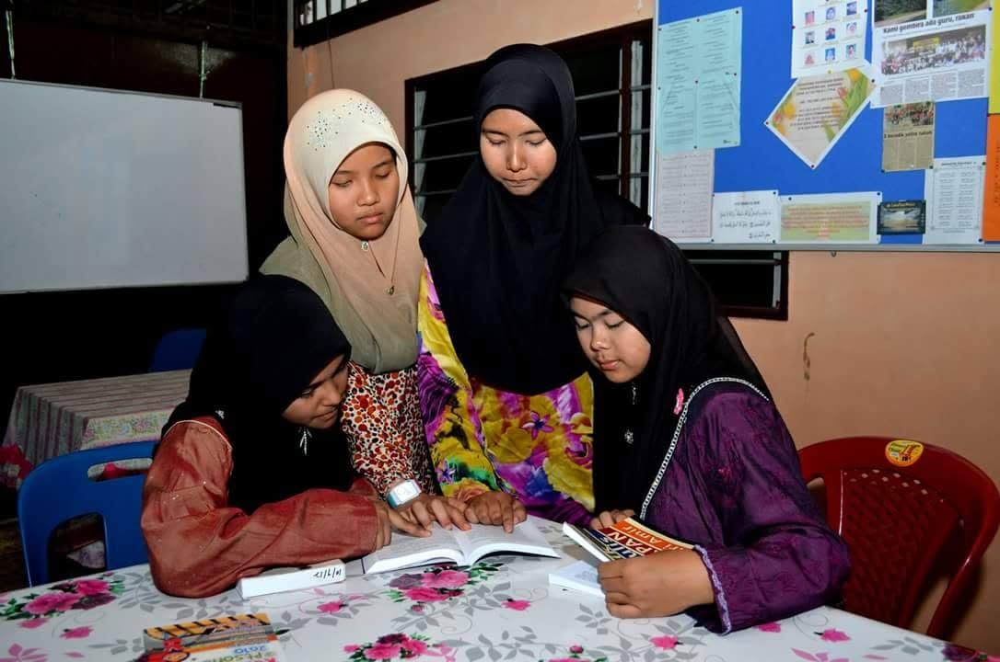
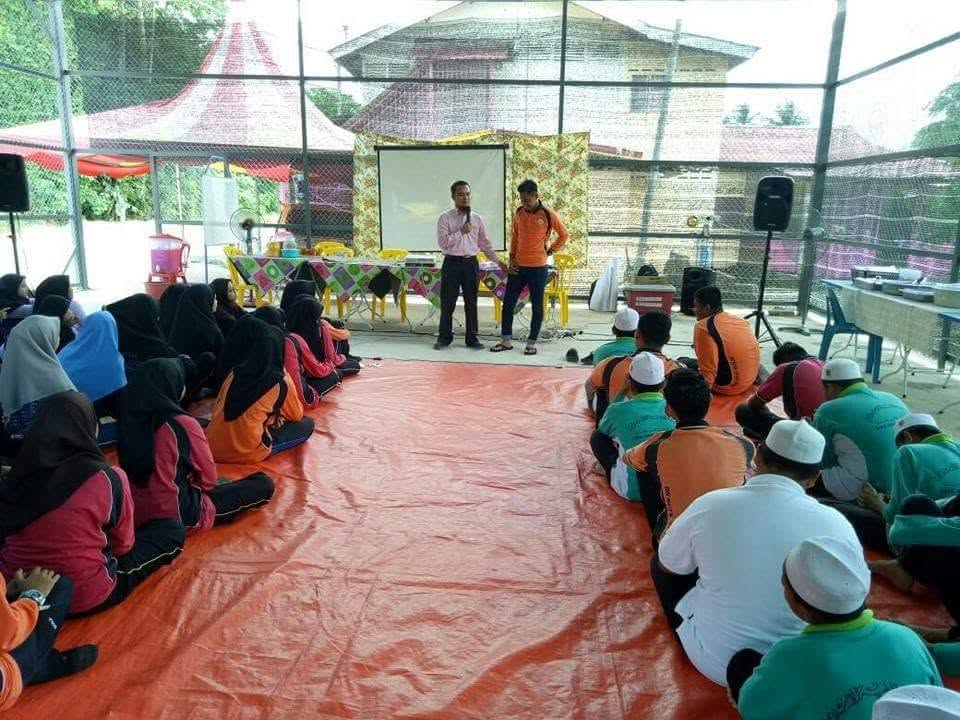
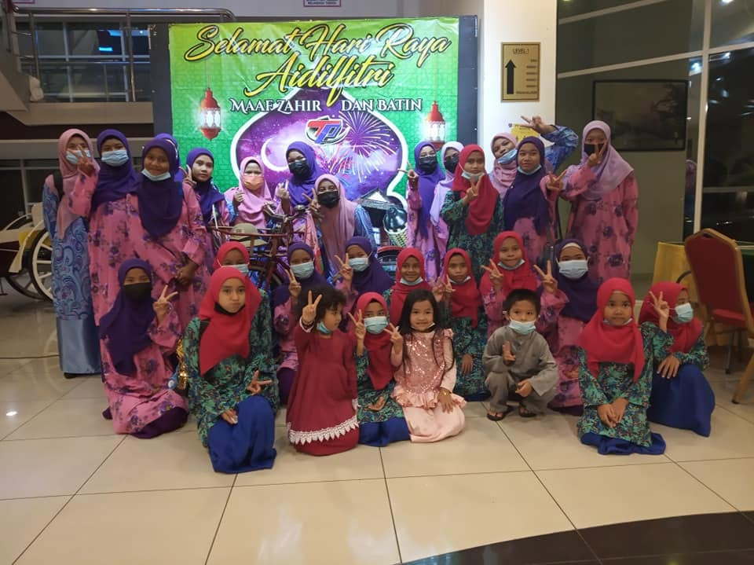

Islamic Education & Tahfiz
Children are guided in their religious studies, including reading the Quran, memorizing (tahfiz) and Islamic values which form the moral foundation of their upbringing.
More info →Since 2004, the Nur Hidayah Orphan Welfare Society has been a safe and loving refuge for orphans and underprivileged children in Kampung Cheh, Bukit Gantang, Changkat Jering, Perak, supported entirely by the generosity of the public.
Year operations began by Allahyarham Abd Manaf Tahir
Officially registered as Persatuan Kebajikan Anak Yatim Nur Hidayah
Children currently under care, aged 2 to 17 years old
Former residents who have successfully continued to college

Persatuan Kebajikan Anak Yatim Nur Hidayah began as a single act of compassion by Allahyarham Abd Manaf Tahir, who in 2004 opened his home in Kampung Cheh, Bukit Gantang, to orphaned and abandoned children in the surrounding community.
Encouraged by her family and encouraged by the villagers, what started as a personal responsibility grew into a formal welfare organization. Today, under the leadership of Chairman Mohd Yussairie Mohd Saad, Nur Hidayah continues to care for more than 30 children by providing them with shelter, food, education, and most importantly, a family.
Read Our Full Story →Every child at Nur Hidayah receives the care, education and love they deserve — regardless of their background.

Children are guided in their religious studies, including reading the Quran, memorizing (tahfiz) and Islamic values which form the moral foundation of their upbringing.
More info →
Volunteers and staff assist residents with their schoolwork and provide extra tuition in core subjects to help them keep up and excel in their studies.
More info →
From sports days to cooking workshops and festive celebrations, children at Nur Hidayah enjoy a well-rounded childhood that builds character and social skills.
More info →Nur Hidayah lives entirely on public donations. There is no government funding and no permanent corporate sponsors. Your contribution, no matter how big or small, directly feeds, educates and protects children in need.
A glimpse into the daily activities, celebrations and milestones of our children.
